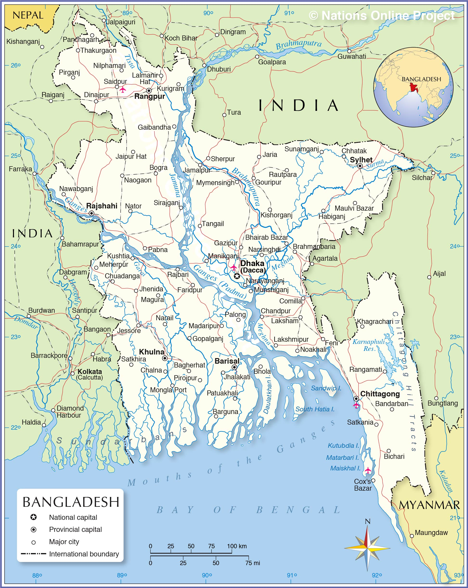

Fishing boats at Inani Beach in Ukhia Upazila of Cox's Bazar District in southeastern Bangladesh.
Image: Shaidul Islam
Bangladesh, officially the People's Republic of Bangladesh, is a country in southern Asia in the Ganges River delta on the Bay of Bengal.
The state borders India in west, north, and east and has a small border with Myanmar (Burma) in the southeast.Together with the Indian
state of West Bengal, it makes up the historical and geographical region of Bengal.
With an area of 143,998 km², compared the country is slightly larger than Greece
(131,957 km²) or slightly smaller than the U.S. state of Iowa.A population of more
than 168 million people (in 2019), makes Bangladesh one of the most densely
populated countries in the world. The majority of Bangladesh's population are
Muslim (about 88%). Spoken language is Bangla (or Bengali by 98%).Large
parts of Bangladesh are in the low-lying Ganges Delta. The delta is formed
by the confluence of the Ganges (local name Padma), Brahmaputra (Jamuna),
and Meghna rivers and their tributaries.The highest point in Bangladesh is in
Mowdok range at 1,052 m (3,451 ft) in the Chittagong Hill
Brahmaputra River seen from Fulchhari Ghat in Gaibandha
district, Rangpur Division, in Northern Bangladesh.
| Division | Capital | District | Upazilas | Union Councils | Area | Population |
|---|---|---|---|---|---|---|
| Barisal Division | Barisal | 6 | 41 | 352 | 13,225.20 | 9,100,102 |
| Chittagong Division | Chittagong | 11 | 103 | 949 | 33,908.55 | 33,202,326 |
| Dhaka Division | Dhaka | 13 | 89 | 885 | 20,593.74 | 44,215,107 |
| Khulna Division | Khulna | 10 | 59 | 571 | 22,284.22 | 17,416,645 |
| Mymensingh Division | Mymensingh | 4 | 35 | 351 | 10584.06 | 12,225,498 |
| Rajshahi Division | Rajshahi | 8 | 67 | 565 | 18,153.08 | 20,353,119 |
| Rangpur Division | Rangpur | 8 | 58 | 535 | 16,184.99 | 17,610,956 |
| Sylhet Division | Sylhet | 4 | 41 | 338 | 12,635.22 | 11,034,863 |
| Bangladesh | Dhaka | 64 | 493 | 4546 | 147,569 | 165,158,616 |
The map shows Bangladesh and surrounding countries with international borders, the national capital Dhaka (Dacca), province capitals, major cities, main roads,
railroads, and major airports.The principal airport of Bangladesh is Zia International Airport (IATA code: DAC) at Dhaka, there are two more international airports:
Shah Amanat International Airport (formerly M.A. Hannan Int'l) (IATA: CGP) at Chittagong and Osmani International Airport (IATA: ZYL) at Sylhet. Regional
airports at Barisal (IATA: BZL), Cox's Bazar (IATA: CXB), and at Saidpur (IATA: SPD).

Political Map of Bangladesh
The map shows Bangladesh and surrounding countries with international borders, the location of the national capital Dhaka, provincial capitals, major cities, main
roads, railroads, and major airports.
The Map shows the location of following Bangladeshi cities and towns:
Map shows the location of following Bangladeshi cities and towns
(Major cities):